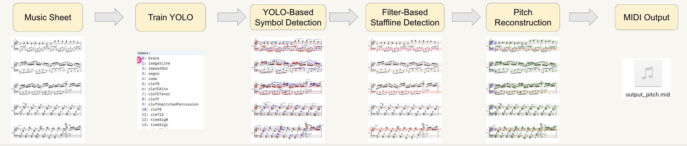
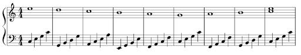
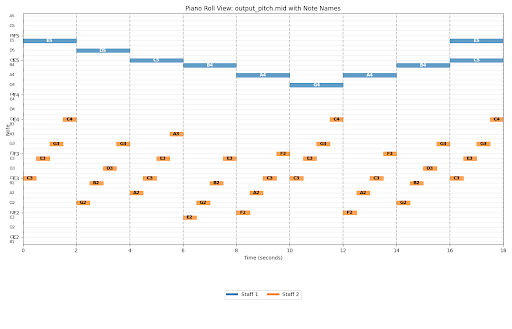

EN.
Staff2Sound is an Optical Music Recognition (OMR) pipeline that converts sheet music images into symbolic
representations and playable results. Real-world sheet music often exhibits dense note clusters, varying
staff
thickness, skew/lighting artifacts, and mixed symbol types. Pure end-to-end approaches can be hard to debug
and
may fail silently when the layout deviates from the training distribution. Our design therefore prioritizes
interpretability and recoverability: we explicitly detect musical primitives and reconstruct
pitches through
staff-aware geometry and rule constraints.
Concretely, we fine-tune a YOLO-based detector to localize key symbols (e.g., noteheads) under a
staff-aware
cropping strategy to improve robustness in high-density regions. In parallel, we apply a
filter-based staffline detection module (e.g., thresholding + morphology / line-enhancing filters) to
estimate staff
geometry such as line positions and spacing. With staff geometry and detected noteheads, we perform
rule-based pitch reconstruction: the vertical position of each notehead is mapped to a staff-relative
pitch index,
then converted to MIDI pitch using music theory conventions. This decomposition makes the system easier to
inspect and iterate: detection errors, staffline estimation errors, and pitch mapping errors can be
diagnosed
separately and improved step-by-step.
The final output is a MIDI file that can be rendered to audio for quick verification, edited in
standard DAWs,
or evaluated against ground truth. This project demonstrates a practical OMR workflow combining deep
learning
detection with classical vision and structured reconstruction, aiming for reliable performance and clear
failure
modes rather than a black-box solution.
中文.
Staff2Sound 是一个将乐谱图像转换为符号化表示并输出可播放结果的 OMR（光学音乐识别）流程。真实世界乐谱常见问题包括：
音符密集导致遮挡、谱线粗细不一、拍照倾斜/光照噪声、符号类型混杂等。纯端到端方法虽然“看起来很优雅”，但在出现异常版式时
往往难以定位失败原因。为此，我们更强调 可解释性 与 可恢复性：先检测关键音乐图元，再结合五线谱几何结构进行重建。
方法上，我们微调 YOLO 检测器定位关键符号（如音符头），并结合面向五线谱区域的裁剪策略，提高在高密度区域的稳定性。
同时，使用 基于滤波/形态学的谱线检测 恢复五线谱几何信息（谱线位置、间距等）。在此基础上进行
基于规则的音高重建：利用音符头相对谱线的垂直位置映射到谱表中的音高索引，再按音乐理论转换为 MIDI pitch。
这种分解式设计让系统更容易调试：检测、谱线估计、音高映射三个环节可以分别分析与优化。
最终输出为 MIDI，可直接渲染为音频做快速试听验证，也可导入 DAW 进行编辑与评估。本项目展示了一个工程可落地的 OMR 思路：
深度学习负责“找符号”，传统视觉与结构化规则负责“理解并重建”，强调可靠性与清晰的错误来源。
Staff2Sound: Sheet Music → 乐谱识别转 MIDI
An interpretable Optical Music Recognition system that converts sheet music images into structured MIDI and playable audio. 一个具备可解释性的光学音乐识别系统，将乐谱图像转换为结构化 MIDI 并生成可播放音频。
Detailed Introduction / 详细介绍
Workflow / 流程图

Scroll horizontally / 横向滚动查看
Open full image / 打开原图
Example / 示例
Input / 输入

Output / 输出

Audio Playback / 音频播放
Skill Set / 技术栈
Python
PyTorch
YOLOv8
Computer Vision
OpenCV
Image Preprocessing
Morphology / Filtering
Staffline Detection
Pitch Reconstruction
Music Theory Rules
MusicXML
MIDI
Audio Rendering